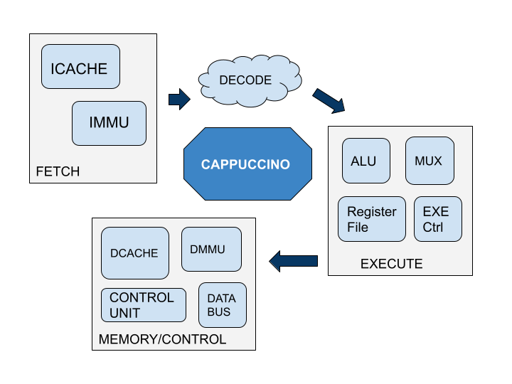

Getting started with Mor1kx formal
May 21, 2021
This summer, I have got an opportunity to work with the FOSSi organization as part of Google Summer Code, Student Developer 2021. I will be working on a project Formal Verification of OpenRISC's mor1kx processor using Yosys. I will be working on this project under the guidance of mentors Stafford Horne and Stefan Wallentowitz. I am very much impressed by the idea of formal verification whose outcomes are very much promising in identifying the bugs early in the design cycle. Not just that, it has other benefits too! It’s faster, reliable, and exhaustive.
No doubt, formal verification has attained popularity in the last few years. And the recent advancements with formal tools drag designer’s attention to identify the design errors which might occur later in the design cycle. Why not detect errors early and fix them? This is what formal verification does, landing at the safer side of the design. Identifying bugs sooner in the design, thus making it easier to fix. If not, any failures in the later phase of the design might result in financial loss and physical damage.
As I will be closely working with the Mor1kx processor, it is necessary to understand its architecture. It’s not just a more sophisticated processor but also a highly configurable one. You can reconfigure any of its pipelines: Cappuccino, Espresso, Pronto Espresso. Adding to this, it also has atomic operations and multicore features.
My approach to Mor1kx formal
Formal verification looks from the output aspect of the design. Here, we are not concerned about any stimulus, or test benches, or any timing paths, and to be exact not even concerned about the design’s functionality. The main focus is on the specifications of the design, and the task is to ensure that the design meets its specifications. The entire state space of the design will be explored, formal tools check if by any means the design enters into an erroneous state.
Getting started with mor1kx formal by referring to the ISA reference manual (spec), formalizing it, and turning that into a mathematical characterization of correctness to show that the processor behaves the same way as its ISA spec. Inside a processor, there are many blocks and sub-blocks, where do I start from? The answer is pretty simple, starting with any small module and extending to the top module would be a good method. That’s what I will be following in my project. Firstly, I will prove the small pieces of the processor and then hierarchically move towards the entire processor. I have divided the work into four verification stages for simplicity and my project flow for formal verification is depicted in the below image.

This is a formal verification plan for the cappuccino pipeline. Here, I have included the main modules but several sub-modules within it are hidden. Beginning with the Fetch block, the attempt is to individually prove the correctness of instruction cache, dpram, and instruction memory management unit modules. After that integrating proved modules and then finally the Fetch block will be formally verified. Next, the same procedure will be followed for decode, execution, and memory blocks. Like the Fetch block, individually ALU, control unit, data caches, and other modules verification will be done. In the end, all the proved verification blocks are integrated to verify cappuccino mor1kx as a whole. Yosys formal tools will be used for mor1kx formal verification as it supports several mathematical models like smtbmc, prove, k-induction, etc. This is my approach for mor1kx formal verification where my primary goal is to detect the common design errors and ambiguities in the design. Hence, making it more reliable.
What's the stability of mor1kx? Is it bug-free? By the end of this project, any doubts about its stability will be answered with formal proofs. Formal verification is a powerful tool for analyzing the lifespan of a chip. We can increase chip/design lifetime by correcting its failures and thus making it error-free. Outcomes of this project might draw the attention of designers who haven’t chosen mor1kx due to its unknown stability. Stay tuned! for further updates on Mor1kx formal.